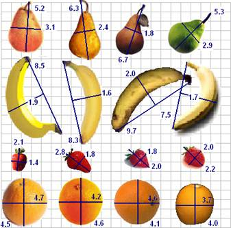
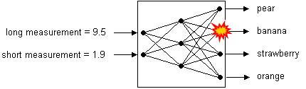
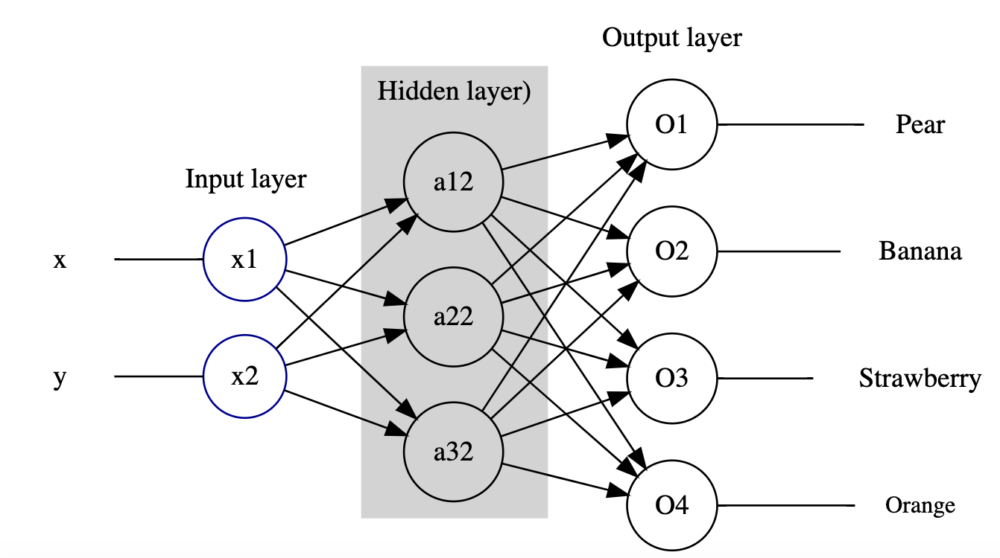
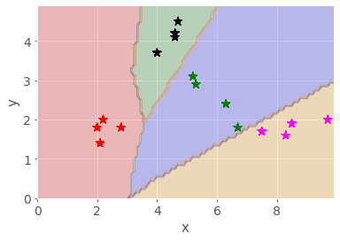
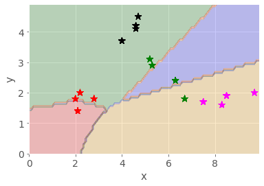
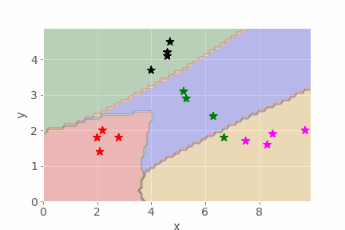

2 Multidimensional data and the MLP¶
The neural network examples in the previous notebook were very impressive, but how do they work?
In this notebook we’ll make a start by looking at a classification task that attempts to identify various pieces of fruit. The activity is a simplified, stylised one, but it demonstrates several of the features (pun intended, as you may see!) that more complex neural network models employ when performing their recognition tasks.
2.1 Fruit-recognition task¶
Consider four classes of fruit: pears, bananas, strawberries and oranges. How might a robot recognise and distinguish between them?
Let’s suppose that a robot’s vision system can isolate the fruit objects and make two measurements. The first is the length of the ‘long axis’. This is called the long measurement. The second measurement is taken at right angles to the long axis, halfway along it. This is called the short measurement. Oranges are approximately spherical in shape, which means that their long and short measurements are nearly the same. Bananas, on the other hand, are long and thin, so their long measurements are larger than their short measurements.
Note that we are also making an assumption that the fruits are all presented to the same scale. This is fine if we are using a fixed camera and the fruit is passing underneath on a conveyor belt, but in a more general photograph that information may not be so easy to discern. The approach we’re taking also suggests we can segment the photographic image to just give us the fruit object within it. Again, in an industrial setting, we may be able to control for this (only one object in view, on a clean white conveyor background, for example).
Let’s assume we have got the images in the form that is required.

The table below records the measurements listed for the fruit shown in the diagram calculated according to the method described above. The long measurement is given first, followed by the short measurement.
pears |
bananas |
strawberries |
oranges |
|---|---|---|---|
(5.2, 3.1) |
(8.5, 1.9) |
(2.1, 1.4) |
(4.7, 4.5) |
(6.3, 2.4) |
(8.3, 1.6) |
(2.8, 1.8) |
(4.6, 4.2) |
(6.7, 1.8) |
(9.7, 2.0) |
(2.0, 1.8) |
(4.6, 4.1) |
(5.3, 2.9) |
(7.5, 1.7) |
(2.2, 2.0) |
(4.0, 3.7) |
These measurements can be plotted on a grid. The longest measurement is plotted on the horizontal axis, and the shorter measurement is plotted on the vertical axis.
![A graph showing clusters of different fruits. The fruit short-axis measurement is plotted on the vertical axis which runs from 0 to 5. The fruit long-axis measurement is plotted on the horizontal axis which runs from 0 to 10. Each individual fruit is plotted at its long and short axis measurements, and each cluster of fruit is enclosed by a circle or ellipse. The four strawberries form a cluster centred around (2.2, 1.7). The four oranges cluster around (4.4, 4.1). The pears form a slightly looser cluster around (5.7, 2.5). The bananas form an oval around (8.8, 1.8). Each cluster is distinct. The strawberry cluster is well separated from all the others, but the others touch although they do not overlap. The short-axis measurements of the pears and bananas overlap considerably, but the long-axis measurements for pears and bananas do not overlap. Both long- and short-axis measurements for pears and oranges overlap somewhat when considered on their own, but the clusters remain distinct because combinations of short and long measurements don’t overlap.](../_images/tm129_rob_p8_f003.jpg)
As the diagram shows, when we plot the objects on a grid using the long measurement on the horizontal x-axis and the short measurement on the vertical y-axis, the similar sorts of fruits are arranged close to each other. These sorts of grouping are typically referred to as clusters.
When data are grouped like this, we can use various techniques to learn about the clusters, as well as identifying which cluster a newly presented object is likely to correspond to. Neural networks provide a powerful method for working with such data.
2.1.1 Activity – A simple classification task¶
Let’s suppose that a robot has the data above in its memory, and it comes across (as yet) unclassified fruit with the pairs of measurements shown in the table below.
Features |
Label |
|---|---|
(2.5, 2.1) |
strawberry |
(4.6, 4.5) |
orange |
(6.3, 2.9) |
|
(9.5, 1.9) |
|
(1.8, 1.5) |
|
(5.1, 2.1) |
|
(4.5, 4.1) |
Double-click on this cell and complete the table, identifying the class of fruit the robot should associate each measurement pair with.
Example solution¶
Click on the arrow in the sidebar or run this cell to reveal an example solution.
The answers I got were as follows:
Features |
Label |
|---|---|
(2.5, 2.1) |
strawberry |
(4.6, 4.5) |
orange |
(6.3, 2.9) |
PEAR |
(9.5, 1.9) |
BANANA |
(1.8, 1.5) |
STRAWBERRY |
(5.1, 2.1) |
PEAR |
(4.5, 4.1) |
ORANGE |
You probably found this quite easy. Arranging data points like this on a grid is a simple idea, and there are many techniques that use it to enable automatic classification.
In many cases, however, rather than imagining the points in a 2-dimensional grid, the network may be partitioning them over a 20-dimensional grid, or a 200-dimensional grid. This is quite a bit harder for us to visualise!
2.1.2 The fruit-classification task¶
The general idea behind classification using neural networks as classifiers is that data are fed into the network and one of the outputs ‘fires’, signifying that the class associated with this output has been recognised.
For example, in the figure below, a neural network that classifies fruit is shown diagrammatically. On the left are inputs, long measurement (9.5) and short measurement (1.9). On the right are outputs: pear, banana, strawberry and orange. Between are represented three layers of neurons – two input neurons, three intermediate neurons and four output neurons – and their interconnections. In this case, the measurements (9.5, 1.9) are fed into the network and the output corresponding to ‘banana’ fires.

2.2 A simple neural network model – a multi-layer perceptron (MLP)¶
One of the original neural network models, but one that is still relevant today, is known as a multi-layer perceptron or MLP network.
The Python scikit-learn (sklearn) package supports a range of techniques for creating learned models, including an MLP. We will find it convenient to use this package to train a fruit-discriminating network for us.
The multi-layer perceptron (MLP) network model has a certain number of input-layer nodes, or neurons, that accept the input data, and some output-layer neurons that are used to represent output classes. Connecting the input and output layers are one or more layers of inner hidden neurons.
Let’s consider how we might configure such a network that will hopefully be able to recognise, and discriminate between, our fruit examples.
On the input side, we need two nodes to represent the long measurement and the short measurement.
On the output side, in order to identify which category of fruit a set of input measurements corresponded to, we need… what?
In order to train the network, we need to encode the desired response in a way that the network can represent, and present that as our training value rather than the human-understandable label.
The network only deals with numbers, not categorical labels (such as banana, pear, orange, strawberry) so we need to encode these values numerically. In an MLP classifier – that is, an MLP that we want to perform a classification task that assigns each set of inputs to one or more different categorical groups, or classes – we use one output to represent each separate category.
For our MLP, we will need four outputs, one for each class of fruit. The numbers on the output neurons range from 0 to 1. By convention, we interpret 0 to mean not recognised and 1 to mean recognised.
So our network will need to have a structure that looks something like the following:

In many cases, each of the actual values of the four outputs are likely to be in the range 0…1, for example (0.1, 0.9, 0.2, 0.1).
Visualising these values makes it clear which output class dominates:
import pandas as pd
# Create a simple dataframe containing
# the example output values
outputs_df = pd.DataFrame({"outputs": [0.1, 0.9, 0.2, 0.1]})
# and generate a bar chart from it
outputs_df.plot(kind='bar', title="Example outputs");
In these cases, the MLP uses a winner-takes-all strategy in which the largest value is rounded up to 1 and the other values are reduced to 0.
In our example of outputs (0.1, 0.9, 0.2, 0.1), the second output would be rounded up to 1, whilst the other three outputs are reduced to 0, giving the output classification (0, 1, 0, 0). The second neuron is said to have ‘fired’ as a result, and the network recognises that input as being associated with the class represented by the second output neuron.
If the second output identifies the banana class, then for the input (9.5, 1.9) the desired output would be (0, 1, 0, 0). The values (9.5, 1.9) and (0, 1, 0, 0) could then be used as a ‘training pair’ of known inputs and outputs.
2.3 The classifier training pipeline¶
Trying to keep track of which outputs correspond to which categorical label can be a bit fiddly, particularly with large numbers of categories, so it’s rather handy that the sklearn MLP function just lets us pass in the categorical label values and it works out the output layer mappings for us.
For this reason, as well as the need to generate features derived from the original input image that can be fed into the network, we typically think of the network as part of a wider system. This system takes the original input, passes it thorough a pre-processor that transforms the input into a form that can be fed into the network, runs it through the network, and then passes the output through a post-processor that turns the output into something human readable. Run the following code blocks to see a diagram that illustrates this.
A wide range of tools are available that support the automated generation of a wide variety of diagram types from text-based descriptions.
The blockdiag_magic magic allows us to generate simple block diagrams from text descriptions written in appropriately magicked code cells. (Based on blockdiag.com.)
%load_ext blockdiag_magic
Run the following code cell to generate a simple block diagram that depicts how the output from a pre-processor operation can feed into a neural network and from there to a post-processor operation:
%%blockdiag
A [label = "Pre-processor"];
B [label = "Neural Network"];
C [label = "Post-processor"];
A -> B -> C;
2.4 Training a simple MLP using sklearn¶
The Python sklearn package provides a range of tools for creating different sorts of machine classifier, including multi-layer perceptrons.
You aren’t expected to learn how to write this sort of code for yourself. Instead, regard the following as a demonstration of how we can use the sklearn package to create and train an MLP, illustrating exactly what steps are involved in the process and how much code it takes.
So let’s see how it works…
2.4.1 Creating a training dataset¶
The code below will load a set of training pairs of data based on the fruit measurement data into a pandas dataframe.
Run the cell to load the values into the dataframe and preview the result.
df = pd.DataFrame([['Pear', [5.2, 3.1]], ['Pear', [6.3, 2.4]],
['Pear', [6.7, 1.8]], ['Pear', [5.3, 2.9]],
['Banana', [8.5, 1.9]], ['Banana', [8.3, 1.6]],
['Banana', [9.7, 2.0]], ['Banana', [7.5, 1.7]],
['Strawberry', [2.1, 1.4]], ['Strawberry', [2.8, 1.8]],
['Strawberry', [2.0, 1.8]], ['Strawberry', [2.2, 2.0]],
['Orange', [4.7, 4.5]], ['Orange', [4.6, 4.2]],
['Orange', [4.6, 4.1]], ['Orange', [4.0, 3.7]]
],
columns = ['Fruit', 'Input'])
# Preview the first six rows
df.head(6)
These measurement-label pairs are called the training data.
Once a system has been trained, it can be tested using previously unseen data of a similar form to the training data. In this case, given the input features (the x and y bounding box measurements), the network will generate a prediction of which class the network ‘thinks’ the measurements are associated with and can then check this prediction against the supplied category.
The network can also be tested using just the bounding box measurements, in which case the prediction cannot be automatically checked, but does mean we can test data that has never been seen or previously categorised and labelled before.
2.4.2 Initialising the network structure¶
With the data in place, let’s start to prepare things for our network. We don’t actually need to define the number of input and output nodes (because they can be calculated from the number of provided output categories), but let’s make a note of the number we think there are anyway.
For example, we expect the number of input nodes to be two, one for the x-value and one for the y-value; the number of output nodes should be four, one for each fruit category.
We do need to specify the number of hidden neurons though, so let’s have two layers with six nodes in each.
hidden_nodes = (6, 6)
2.4.3 Initialising and training the network¶
Run the following code cell to create the initial neural network with the required number of hidden nodes:
from sklearn.neural_network import MLPClassifier
fruit = MLPClassifier(hidden_layer_sizes=hidden_nodes, max_iter=20)
With the max_iter set to the low value of 20, this means that we will show the network twenty inputs, and update its weights just twenty times.
We would not really expect such a network to learn very much at all using this strategy, but let’s try it anyway.
Run the following code cell to train the network, or ‘fit the model’, and then check to see how well it performs against each item in the dataframe.
Note that by fitting the data to the model, the number of inputs and outputs are automatically determined from the input data.
Ignore any ConvergenceWarning warning.
# Fit the model
# The first argument is a list of feature lists
fruit.fit(df['Input'].to_list(), df['Fruit'])
We can now preview the size of the network that has been created:
fruit.n_features_in_, fruit.n_layers_, fruit.n_outputs_, fruit.hidden_layer_sizes
We can import a convenience function that will present this as a simple report:
from nn_tools.network_views import network_structure
network_structure(fruit)
One of the defining features of an MLP network is that it is fully connected, which is to say that all the input nodes are connected to all the nodes in the first hidden layer; all the nodes in the first hidden layer are connected to all the nodes in the second hidden layer; and all the nodes in the second hidden layer are connected to all the nodes in the output layer.
We can visualise the basic (unweighted) network structure by passing the show=True parameter to the network_structure() function:
network_structure(fruit, show=True)
When the network was initialised at the start of the training run (the fruit.fit() operation), the number of input and output nodes was determined from the training data and the complete network structure was initialised. The lines connecting the nodes, which are referred to as weights, were initially set to random values.
The way the network is then trained (that is, the way the model is fitted) is as follows.
The inputs to each node in the first hidden layer are calculated by multiplying each input value to a first hidden layer node by its corresponding connection weight, then adding together (‘finding the sum of’) the weighted values incoming to each node. An additional ‘bias’ term may also be added. Each node then looks at the summed input value and outputs a value either in the range -1…1 or 0…1 for different types of MLP, based on the input.
The same sort of calculation repeats at the next layer, using weighted input from the previous layer.
At the output layer, the winner-takes-all decision is applied and an output class is identified:
if the output class is correctly identified, then the weights connected to input nodes that fired are rewarded and their values are increased
if the output class is incorrectly identified, then the weights connected to input nodes that fired are punished and their values are decreased.
Over time, the network learns to associate particular outputs with particular inputs.
2.4.4 Network convergence¶
When you ran the # Fit the model code cell, it probably displayed a ‘ConvergenceWarning’ message declaring that the complicated-sounding Stochastic Optimizer had reached the Maximum iterations (20), (which was the maximum value we set in the original setup), but ‘the optimization hasn’t converged yet’.
In other words, the MLP perhaps hasn’t been trained as effectively as we might have hoped.
A ‘loss curve’ shows the change in ‘error’ at each iteration. The optimisation has converged when the curve starts to flatten off, showing that the ‘loss’ is unchanging and there is no improvement in how the network performs from one iteration to the next.
If we look at the loss curve for our network, we see that it is far from flat at the end of the training run: this network still has some way to go to be properly trained:
import matplotlib.pyplot as plt
plt.plot(fruit.loss_curve_)
plt.title("Loss curve whilst training MLP.");
# This is also available as:
# nn_tools.network_views.show_loss(MLP)
2.4.5 Testing the network¶
We can present the original training inputs to the network to see what classes it predicted in each case:
# Check the prediction for each input
predictions = fruit.predict(df['Input'].to_list())
predictions
That’s a little hard to make sense of, particularly for larger training sets, so let’s use another simple helper function to compare the expected outputs with the actual ones:
from nn_tools.network_views import how_did_I_do
# Pass in the MLP, training dataframe,
# input data and class column names
how_did_I_do(fruit, df, "Input", "Fruit")
Looking at these prediction results, we see that they’re not very good.
2.4.6 A closer look at how well the network performed – precision, recall and the confusion matrix¶
There are actually a couple of other tools we can use to see just how well (or badly) the network is performing in a more formal way. The first is a classification report; this tells us, for each output category, several useful things, including the following.
The precision is a metric that captures a sense of whether the classifier doesn’t ever claim that something is what it isn’t. Formally, it relates the number of true positives (the classifier said it was a banana and it was a banana) and false positives (the classifier said it was a banana but it wasn’t a banana); the best value is 1, and the worst value is 0.
The recall gives a sense of how well the classifier recognises every instance of a particular category, by relating the number of true positives and the number of false negatives (for example, the classifier said it wasn’t a banana, but it was). Again, 1 is good, 0 is bad.
The support is the number of training patterns in the class used as the basis of that line of the report.
from sklearn.metrics import classification_report
# The zero_division parameter suppresses a divide by zero warning when using zeroed parameters
print(classification_report(df['Fruit'], predictions, zero_division=False))
The second tool is called a confusion matrix. The rows define each of the actual known categories and the categories across the top identify the classes each of those items were predicted as being in when tested. If the classifier is working perfectly, then the confusion matrix is a diagonal matrix, with zeros everywhere other than down the top-left to bottom-right diagonal.
from sklearn.metrics import confusion_matrix
print(confusion_matrix(df['Fruit'], predictions))
Our network really isn’t very good, is it?!
2.5 Improving the performance of the network¶
Let’s see if we can improve things by tweaking the network parameters, such as the hidden layer sizes (h1 and h2) and the maximum number of training iterations.
2.5.1 Activity – Interactively training the network¶
Run the following cell to create a simple interactive application that lets you use sliders to set the parameter values and displays the classification report and confusion matrix as you do so.
from ipywidgets import interact_manual
fruit = None
@interact_manual(iterations=(100, 3000, 100), h1=(0, 10, 1), h2=(0, 10, 1))
def trainer(iterations=2000, h1=6, h2=6):
global fruit
fruit = MLPClassifier(hidden_layer_sizes=(h1, h2), max_iter=iterations)
# Fit the model
fruit.fit(df['Input'].to_list(), df['Fruit'])
# Check the prediction for each input
predictions = fruit.predict(df['Input'].to_list())
print(classification_report(df['Fruit'], predictions))
print(confusion_matrix(df['Fruit'], predictions))
# Display the loss curve
plt.plot(fruit.loss_curve_)
plt.title("Loss curve whilst training MLP.");
When you think you have trained your network well, let’s see how it does with some new examples. Run the following code cell to test the network on some previously unseen examples.
fruit.predict([[7.5, 1.0], [2.0, 1.5], [6.0, 2.5], [4.0, 4.0]])
How did your network do? (I’m hoping that you could work out which fruit was which from the numbers!)
Record your observations about how effectively the network worked here, as well as any other reflections you have about how the parameter changes affect the performance of the network.
2.6 Visualising the network structure¶
Sometimes, it can be quite instructive to look at the neural network weights. If you see that all the weights coming into a particular node are close to zero, then that node isn’t really contributing much to the decision-making in the next layer, so you might consider reducing the size of the layer with the redundant neuron(s).
2.6.1 Visualising network weights¶
You have already seen how we can use the network_structure() function to visualise the structure of a trained network. If we pass the weights=True parameter into the function, we can also visualise the weights used in the network: colour indicates sign (positive or negative) and thickness increases with magnitude (absolute value).
Run the following cell to view the weights of your trained network; the blue lines are positive weights and the orange lines are negative weights. The thickness of the lines is proportional to their value.
network_structure(fruit, weights=True)
Based on the structure of the weights, does it look like there may be any redundant or unused neurons in there? If so, try reducing the size of that layer and retrain the network. Can you reduce the size of the network whilst still retaining its performance level? (Reducing the network size should also speed up the training because there are fewer sums to do on each iteration.)
Note that each time you train the network from scratch, the initial network weights and the selected training patterns are determined randomly, so even with a fixed architecture you may find that sometimes it reaches a good solution, but other times it doesn’t.
2.6.2 Activity – Visualising boundaries¶
The way the MLP works is to try to draw ‘decision lines’ or ‘boundary lines’ that separate each clustered group of values associated with one class from the values associated with other categories.
For a two-dimensional feature space as the one we have (the long and the short measurements each represent a separate ‘feature’ of the input training space) we can plot how every point in the plane (within specified bounds) is categorised, and colour it accordingly.
The code I have available for this doesn’t (yet!) work with categorical labels used to name the separate categories – it expects numbers instead – so let’s create a new network trained on numerical values used to identify the fruits, rather than their names.
Let’s prepare the data:
df['FruitNum'] = df['Fruit'].map({'Strawberry': 1, 'Pear': 2, 'Orange': 3, 'Banana': 4})
df.head(6)
Then create and train a model:
model = MLPClassifier(hidden_layer_sizes=(6, 6), max_iter=2500)
model.fit(df['Input'].to_list(), df['FruitNum'])
predictions = model.predict(df['Input'].to_list())
print(classification_report(df['FruitNum'], predictions))
print(confusion_matrix(df['FruitNum'], predictions))
And now visualise that to see where the decision boundaries are:
from nn_tools.boundary_models import plot_boundaries
plot_boundaries(model, df)
Well-trained model
Record your observations about what you see in the visualisation of the boundaries here.
How does the visualisation look if you change the model parameters so that the network doesn’t perform so well? What differences are there compared to the well-trained model?
Poorly trained model
Record your observations about what you see in the visualisation of the boundaries here.
Example observations¶
Click the arrow in the sidebar or run this cell to reveal some example observations.
For the well-trained model, I see something like the following (the actual boundaries move each time I retrain the network as a result of the initial random starting condition):

The different fruit clusters are clearly separated into different coloured areas, with decision boundaries separating the different classes of fruit.
In the poorly trained model, the decision lines do not properly separate the different classes of fruit, with many items falling into the wrong grouping.

Further observations: for a two-dimensional model this sort of visualisation works well, and could even work for a three-dimensional model. But with 10, 100 or 1000 input dimensions it would be rather hard to visualise. As a mind’s-eye visualisation tool, however, you may get a ‘feeling’ about what separation in high-dimensional space might be like.
2.7 Partially training the network¶
As well as training a network until it converges, or until the maximum number of iterations is reached, we can also train the network one iteration at a time, and review the performance of the network at the end of each iteration.
To do this, we need to use the .partial_fit() training function, rather than the .fit() training function.
We also use the tqdm.trange() function, rather than a simple range() function, to add a dynamic progress bar to show the progress of the training procedure.
The following code cell runs 1000 iterations, showing the confusion matrix after every 100 iterations (you will need to scroll down the cell).
Once again, you are not expected to be able to create, or even to necessarily understand, the following code. Rather, it is shown simply to illustrate that we can create our own tools, and how much code is involved in creating them, as well as the sorts of steps required to obtain the desired behaviour.
import numpy as np
import matplotlib.pyplot as plt
from tqdm.notebook import trange
model = MLPClassifier(hidden_layer_sizes=(6, 6))
num_iterations = 1000
# Get a list of all the classes
classes = np.unique(df['FruitNum'])
for i in trange(num_iterations):
# In the partial_fit(), we need to declare up front what all the possible classes are
# This is because we could present different training classes at each step
model.partial_fit(df['Input'].to_list(), df['FruitNum'], classes)
# for every 100 iterations, display the result
# A simple way to do this is to divide the iteration count by 100
# and see if there's a remainder...
if (i==0) or ((i+1) % 100 == 0):
predictions = model.predict(df['Input'].to_list())
print(f"\n\nAt iteration {i+1}:\n")
#print(classification_report(df['FruitNum'], predictions))
# Generate the boundary plot
fig, ax = plot_boundaries(model, df, True)
# And display it
display(fig)
# Prevent the repeated display of the figure at the end
plt.close(fig)
# Also display the loss evolution
plt.plot(model.loss_curve_)
plt.title("Loss curve for MLP.")
plt.close(fig)
# Also show the confusion matrix
print(confusion_matrix(df['FruitNum'], predictions))
Did the network get a reasonable solution? Run the cell several times again, reviewing the confusion matrices produced each time. You should see how the network may come to a reasonable solution quite quickly on some runs, but not achieve a particularly good result even after 1000 iterations on other runs.
2.7.1 Animating the boundary line evolution¶
Finally, it’s worth noting that we can also generate animations to show how the boundaries evolve over a specified number of iterations. In the following cell, the mlp_boundary_animate function reuses the routine from the previous code cell to train the network, but also grabs the boundary plot every 10 iterations (as defined by the every parameter) and uses it as an animation frame.
Note that it may take some time to produce the animation if you set the every parameter too low. Changing it to every 100 iterations should speed things up but the animation will not be so smooth.
from nn_tools.boundary_models import mlp_boundary_animate
mlp_boundary_animate(df, size=(6, 6), iterations=1000, every=10, fname='animation.gif');
The animation function may take some time to run, so here is an example of the sort of thing it can create, showing how the decision boundaries evolve as an MLP is trained:

2.8 Summary¶
In this notebook, you have seen how we can describe some real-world items in a way that allows us to train a particular sort of fully connected neural network known as a multi-layer perceptron (MLP) to distinguish between the items and correctly classify them (or not!).
Metrics such as precision and recall scores, and tools like the confusion matrix and boundary visualiser, allow us to get a feel for how accurate the model is and the extent to which we can trust it.
By visualising the network weights, and looking for nodes that appear to only ever make a small contribution, if any, to the activation of nodes in later layers, we can sometimes get a feel for whether we have created a network that is larger than it needs to be to perform a particular task.
In the next notebook, you will have an opportunity to explore a little more the inner workings of a neural network where the categories are not so easy to separate.